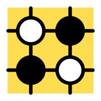

Interests
-
-

Go
Go is an ancient board game that originated in China more than 2,500 years ago and is still widely played today, especially in East Asia. I started learning Go when I was six years old, and I still play it today.
Compared with chess, Go has a much simpler rule, but the complexity of the game is much higher than chess.If you are interested in Go,click here! -
Movies
I love everything about video game.I have played hearthstone,which is developed by Blizzard Entertainment for more than five years! The game features cross-platform play, allowing players on any supported device to compete with one another, restricted only by geographical region account limits. The game is a turn-based card game between two opponents, using constructed decks of 30 cards along with a selected hero with a unique power1. Players use their limited mana crystals to play abilities or summon minions to attack the opponent, with the goal of destroying the opponent’s hero.
-
Cooking
During the pandemic, I started to learn how to cook. I found it is a really a fantastic thing to taste the food made by myself. Nothing's yummier than a slow smoked beef brisket with a tasty crispy bark! It's very easy to do. The only challenges are the waiting time and bringing enough friends over to eat the massive pile of meat.